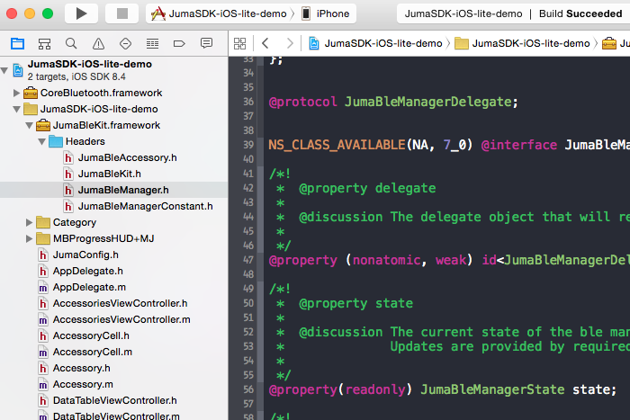

ECHO的意思是APP给硬件发送一个数据，硬件给APP返回一个同样的数据。
通过“ECHO”的例子，我们可以：
1. 熟悉iOS SDK的使用
2. 熟悉iOS SDK的Demo APP
3. 和嵌入式SDK配合实现蓝牙的数据通信进入到 juma_sdk/images 文件夹下，点击flash即可。
为芯片烧写底层的通用固件，这包括了：
juma-sdk-nrf51822-256k.hex - JUMA嵌入式SDK
s110_nrf51822_7.0.0_softdevice.hex - Nordic nRF51822的蓝牙协议栈 x:\juma-embedded-sdk-master\examples\echo\arm\Template.uvproj iOS SDK为库文件，位于：
JumaSDK-iOS-lite-demo/JumaSDK-iOS-lite-demo/JumaBleKit.framework关于iOS SDK在APP中的使用，请参阅：
http://www.juma.io/doc/zh/ios_sdk/ios_guide/environment.html
编译工程，将APP安装到手机：

该APP提供蓝牙扫描、连接、发送数据、显示接受数据的功能，是一个功能齐全的蓝牙调试助手。 截图中的蓝牙外设的固件并非本文开头提供的 ECHO 固件, 所以返回的数据和发出的数据并不相同
假如您的蓝牙外设刷入了 ECHO 固件，则返回的数据和发出的数据会是相同的。